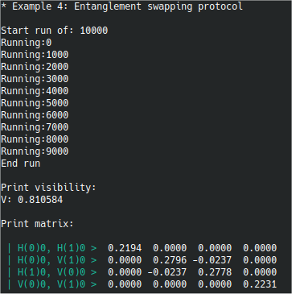

|
SOQCS
RV1.0 (Beta)
Stochastic Optical Quantum Circuit Simulator
|


|
|
SOQCS
RV1.0 (Beta)
Stochastic Optical Quantum Circuit Simulator
|
|
EXAMPLE 4: Entanglement swapping protocol using a physical quantum dot as a non-ideal Bell emitter.
Entanglement swapping protocol as presented in ref. [1] in which a quantum dot is used as a non-ideal Bell emitter. We consider random noise errors due spin scattering, cross dephasing and fine structure splitting FSS in the emission of the photons.
Description:
In the entanglement swapping protocol two pairs of photons are emitted in entangled Bell states. One photon of each pair is sent to a beamsplitter and the result at the output of the beamsplitter is measured. If one photon is detected in each output channel of the beamsplitter then the remaining two photons are also entangled. However, if the two pairs are not ideal Bell states misdetections can happen and the resulting density matrix of the two photons not traveling by the beamsplitter will not be the one of a pure state of a perfectly entangled pair of photons. In this simulation we will perform the protocol in the same way than depicted in [1]. This is, the two photons not traveling trough the beamsplitter will arrive at the detector through the same channel but at different times that here are labeled as 0 and 1. The calculation is repeated with different instances of the state of the QD emitter to capture the effect on the output of the distribution of noise in the input. We consider random noise, cross-dephasing noise and FSS effects on the photons that may give different imperfections to the input state in each emission. The result is compared with the analytical result for the current parameters. Note that we are neglecting pure dephasing effects in this example (this is T2* = 0) because they are computer costly but they can be calculated in a longer time with small modifications to this code. We also use an ideal beamsplitter for simplicity.
[1] F. Basso Basset et Al. Entanglement swapping with photons generated on demand by a quantum dot. Phys. Rev. Lett., 123:160501 (2019)
| const | int N Number of iterations to calculate the result. |
| const | int prntn Number of iterations to print a progreess if the calculation message |
Output:
| SOQCS result |
|---|

|
Analytical result ref. [1]:
| Analytic result |
|---|

|
Note that in this output the outcomes are labeled by the polarization of the photons H/V, their time of arrival to the detector in parenthesis (in this case 0=first and 1=second) and their channels. In this case both photons arrive in channel zero but delayed in time.
Maynooth Univeristy

Copyright:
Copyright © 2022 National University of Ireland Maynooth,
Maynooth University. All rights reserved.
The contents and use of this document and the related code
are subject to the licence terms detailed in LICENCE.txt
Jiri Vala
e-mail:
jiri.vala@mu.ie
Authorship:
Javier Osca Cotarelo
e-mail:
javier.oscacotarelo@mu.ie